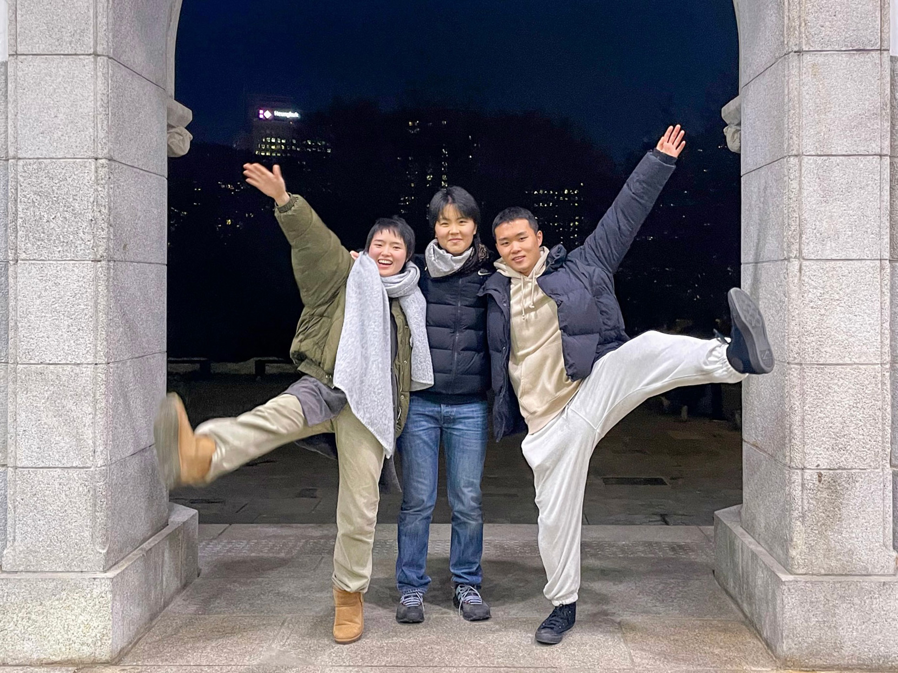

전시 보러 갈래? - 여는 글
<
<하루에 하나>는 미술 전시를 본 뒤 그 전시에 대한 감상을 나누는 프로젝트입니다. 편지, 대화, 단상, 비평과 같이, 필자의 마음에 알맞은 형식의 리뷰를 비정기적으로 발행하고 있어요. 그중 ‘전시 보러 갈래?’는 좋아하는 문화예술계 종사자와 함께 전시를 보고 대화를 나누는 콘텐츠입니다.
이 글은 인터뷰와 사적 대화 그리고 전시 리뷰 사이 그 어딘가에 자리합니다. 이 유연함을 통해 전시는 사람의 몸이 드나드는 열린 공간이라는 사실이 잘 기록되었으면 해요. 서로의 감상을 나누었던 이날의 대화가 좋은 기억이 되어 오랜 시간을 살기 바랍니다.

파티원: 이주요, 재훈, 조현진, 하지민
이주요는 예술가입니다. 그는 주로 드로잉과 설치 등의 매체를 통해, 자신에게 주어진 환경과 시스템을 이해하고 새로운 안을 제시하는 작업을 해왔습니다.
재훈은 이주요가 2004년 라익스아카데미에서 김성환 작가를 만나 교류해왔다는 사실을 알게 되었습니다. 그와 함께 김성환의 개인전을 보면 좋겠다는 생각을 했고, 두 명의 동료를 초대했습니다.
조현진은 (여럿이) 보고 또 만들기를 즐거이 하는 사람입니다.
하지민은 (자기-임명직) 학생입니다.
1부
1. 김성환의 작업관 그리고 Room 1에 관한 단상
- 재훈: 오늘은 전시장 입구 앞에서 <흙 속의 아카이브>를 설명하고 계시던 도슨트 선생님에게 눈이 갔어요. ‘미국 최초의 게이 정치인 하비 밀크가 살해당한 뒤, 그의 애인이 하비가 키우던 선인장의 일부를 친구들에게 유산으로 떼어줬고, 그 선인장이 이강승 작가를 거쳐 이번 전시의 큐레이터에게로 전달되어 만들어진 작품이 <흙 속의 아카이브>이다.’라는 내용인데요. 언뜻 봤을 때 이성 결혼을 한 ‘아줌마'로 패싱되는 관객들이 퀴어 유산에 관한 설명을 듣고 고개를 끄덕거리는 풍경이, 선인장의 일부를 전해 받는 몸짓으로 느껴졌어요.
- 상운: 저 역시 이번 전시가 제안하는 돌봄의 방식에 눈이 갔어요. 예전에 어떤 형이 저에게 그런 말을 했거든요. “우리는 무조건 연예인 아니면 무당이 된다.” 당시에는 무슨 뚱딴지같은 소리인지 의아했는데, 최근에 그 말이 ‘유산을 남기지 못할 수 있다는 위기감’에서 비롯된 것이 아닐까 싶었어요. 생물학적으로 자손을 낳아 번식할 수 없는 지향성의 사람들은 흔히 ‘내가 죽고 나면 나는 어떤 방식으로 기억될까? 혹은 무엇을 남길 수 있을까?’와 같은 질문들을 하니까요.
- 지영: 동시에 저는 다른 예술가들에 의해 기록되는 일에 관해서도 생각했어요. 본 전시에서 작가가 작품에 인용하는 사람들은 대부분 죽은 사람이잖아요. 죽은 사람을 기억하고 아카이빙하는 일이 얼마나 중요한지 알지만, 아카이빙이란 그만큼 복잡한 문제라는 생각이 들어요. 제3자의 시선에서, 죽은 사람의 특정한 면을 부각하는 기록 방식은 대상을 단편적으로 캐릭터화하는 일을 수반할 가능성이 높으니까요. 이강승 작가도 좋은 아카이빙 하시지만 한편으론 캐릭터를 가져와서 모으는 것 같은 인상도 있었어요.
2. 수많은 이야기의 환상 교차로
- 상운: 같은 맥락에서 평소에 품어왔던 질문이 있어요. 저는 제 외부에 있는 타자의 이야기를 작업으로 다루는 일이 두렵거든요. ‘내가 그것들을 망쳐버리거나 이기적으로 사용해 버리는 게 아닐까?’ 싶어서요. 그래서 그런 작업을 하고 싶다는 생각이 들면 ‘왜 내가 해야 하지?’라고 자문하곤 해요. 어떻게 하면 작업으로써 무언가를 돌보는 일을 “내가 해야겠다”라고 생각하게 되는 걸까요?
- 정은영: 보통은 나이가 들수록 삶이 더 스펙터클해지기보다 안정성을 갖게 되는 경우가 많잖아요. 그러다 보면 나의 바깥이 조금 더 잘 보이기도 할 테고요. 그럴 때 내가 지금까지 올 수 있었던 힘이 무엇이었는지를 되묻다 보면, ‘결국 나는 내가 헌신했던 커뮤니티와 같은 보폭으로, 어깨를 걸고 왔을 것’이라는 생각이 분명하게 들고는 해요. 강승 씨가 인터뷰에서 말한 ‘결코 자기 혼자 이룬 건 아니다.’ 역시 비슷한 의미라고 느끼고요.
그리고 대부분의 작가가 자기 내부의 것을 뽑아내면서 작업을 하지만, 저는 그 이야기가 언젠가는 고갈된다고 보거든요. 하지만 타인의 이야기와 연대해서 접근했을 때에는 세계가 더욱더 확장되는 느낌이 있어요. 하지만 이런 방법론들이 점점 유사해지고 그에 동원되는 개념들이 계속 관념화되다 보니까 구체적인 관계나 개별적 삶은 사라지는 느낌도 확실히 있죠. 우리가 막 ‘커뮤니티! 커뮤니티!’ 이러면서도 사실은 물리적 커뮤니티에 구속되어 살기 싫잖아요. 그러면서도 관념으로써의 커뮤니티를 굉장히 중요하게 여기고요. 그런 문제들이 남아있죠.
3. 정보의 증기 사이로 트이는 자유로운 발길들
4. Idiosyncratic한 기록물로 이루어진 유예의 공간
2부
5. 역사의 밤이름을 부를 때 보이는 것을 따라서
- 정은영: 『GET』이나 『DUIRO』 같은 잡지들이 그냥 자료일 뿐이라고 생각할 수 있지만, 그 자료를 만든 사람들이 이제는 없고 종이라는 물질로만 남아 있을 때 되게 묘하고 이상한 감각을 일으켜요. 시간이 흘러가면서 사람이 죽고 무엇인가 상실되면서 세계가 변하는 이 끊임없는 과정 속에서, 소멸해 가는 어떤 역사들에 쌓인 먼지를 누군가가 털어내고 이렇게 예쁜 단상 위에 올려놓은 걸 봤을 때 복잡한 감정이 느껴지죠.
그곳에 웅크려진 굉장히 깊은 감정들이 있을 텐데 그것들이 작업으로 나오지 않던 시기가 쭉 있었던 것 같고, 이제 그나마 강승 씨가 그 감정을 조금 건드렸다고 생각하기도 해요. 어찌 됐든 그의 작업을 2018년에 《Garden》에서 처음 봤을 때 그런 감정을 미세하게 느껴서, 삶이 반추되는 느낌이 일었었거든요.
반면 한국 미술계에 평온하게 안착한 헤테로 작가들은 강승 씨의 작품을 그저 ‘게이+섬세함’이라는, 완전히 탈 정치화되고 탈 성애화된 상투적 등식으로 받아들이고 감탄하는 거예요. 특정한 맥락을 아는지 혹은 모르는지에 따라 완전히 다른 해석의 지평이 열리는 점을 보여줬다는 측면에서 이강승이 작가로서 한국 미술계에 던져놓은 논쟁거리가 있다고도 저는 생각해요.
6. 우리가 처음 보는 언어들의 놀이터
7. 감독 김성환과 과정을 함께하는 일
8. 창작을 해야만 인간이다
- 재훈: 성매매해방운동 주홍빛 연대 차차의 SNS 계정을 봐보면, “경찰들이 철거 차를 가지고 와서 막무가내로 우리가 일하고, 거주하는 건물을 부수고 있다. 지금 사람이 아파트 3층 높이 전봇대에 매달려서 지키고 있는데도 무지막지로 들어온다.” 이렇게, 어떻게 반응해야 할지 모르겠는 탈상식적인 파주시의 행정을 계속해서 공유하거든요? 그런데 사람들이 정말 관심 없어 해요. 마찬가지로 퀴어를 둘러싼 여러 이야기 중에서 어떤 부분은 과도하게 이야기되는 반면 그 반대급부는 정말 조명되지 않는다는 생각이 드네요.
- 정은영: 그게 더글라스 크림프가 에이즈 시대의 미술을 얘기해야 한다고 주장했던 가장 큰 이유이기도 했었죠. 근데 용주골 시위에 나가서 촬영하는 일은 이론을 먼저 접하고 하는 건 아니죠? 그냥 활동하고 나서 언어를 찾아나가는 거죠?
- 지영: 뭐가 먼저인지는 잘 모르겠지만 이런 건 있죠. 읽어야 말할 수 있는 것들, 이를테면 저는 성매매하는 여성들을 페티시적으로 좋아해요. 근데 그동안은 이 사실을 똑바로 말할 수가 없었어요. 말을 해도 되는지 몰랐기 때문에. 어떤 사람은 고층 건물들 사진을 막 찍잖아요. 그 이유가 ‘멋있어서’일 거 아니에요? 제가 차차에 촬영 지원을 나가는 이유도 그 고층 건물을 찍는 사람과 최초의 동기는 비슷한 것 같아요. 거기 있는 분들과 그곳이 멋있어서. 근데 이렇게 말하는 것도 관련해서 공부를 해야 말을 할 수 있더라고요.
- 정은영: 사라 아메드가 『페미니스트로 살아가기』라는 책의 서문에서 의미심장한 말을 하거든요. 기존에 검증된 백인 남자들의 언어를 빌려오면 이론을 견고하게 증축하기가 너무 쉽고 빠르지만 자기는 그걸 하지 않겠다고 말해요. 이게 지푸라기로 지어 쓰러지기 쉬운 집이 될 수 있을지라도 그렇게 하겠다고 선언하거든요. 방금 지영 님이 한 말이 그 말과 굉장히 유사해서, 흡사 그 책을 읽고 이야기한 건가 싶었어요. 사실 몸의 경험에 기반하는 관점들이 페미니즘 미술에서 굉장히 많이 출현했던 이론과 실천의 관점이자 방법론이니까요.
전시 보러 갈래? - 이주요와 함께 (1)
재훈, 조현진, 하지민
2025.01.17
전시 보러 갈래? - 이주요와 함께 (2)
재훈, 조현진, 하지민
2025.01.17